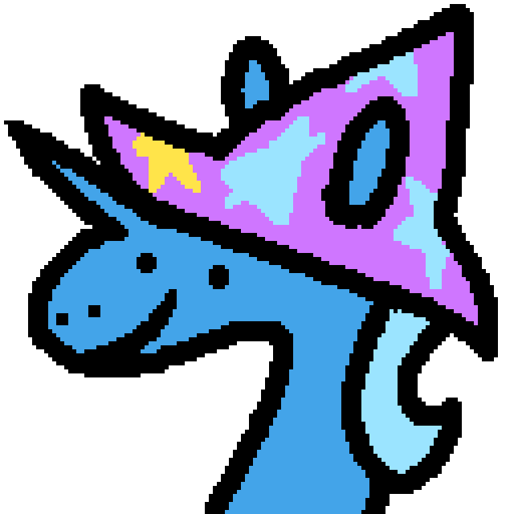

Pony Town Bingo!
woo.
V ½.0.0.0.0
Instructions
=> Find any horizontal, diagonal, or vertical 5 in a row to win
=> Outer tiles are considered "rare" and appear multiple times on the same board
=> Additional information can be read for some tiles by hovering the mouse over them
=> The timer can be paused with the upper left pause button
=> A new board can be generated by pressing the upper left reset button (this will also reset the timer)
=> I cannot be bothered to make this page look any nicer than it currently does right now.